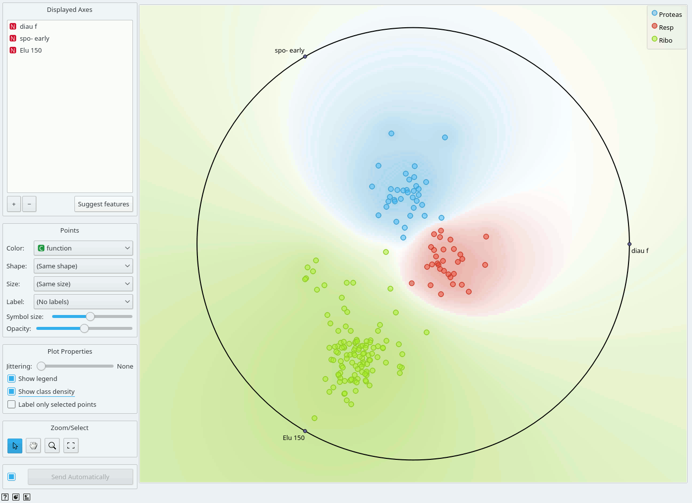
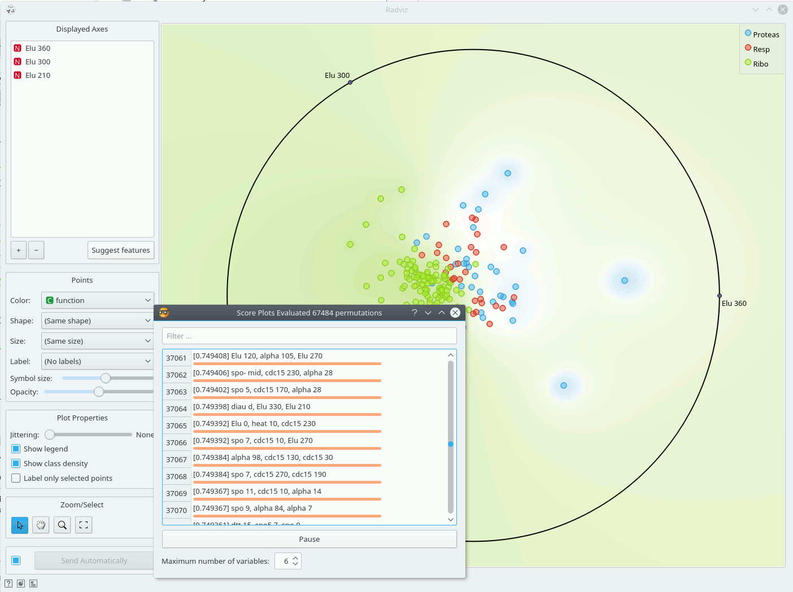

Radviz
Radviz vizualization with explorative data analysis and intelligent data visualization enhancements.
Inputs
- Data: input dataset
- Data Subset: subset of instances
Outputs
- Selected Data: instances selected from the plot
- Data: data with an additional column showing whether a point is selected
- Components: Radviz vectors
Radviz (Hoffman et al. 1997) is a non-linear multi-dimensional visualization technique that can display data defined by three or more variables in a 2-dimensional projection. The visualized variables are presented as anchor points equally spaced around the perimeter of a unit circle. Data instances are shown as points inside the circle, with their positions determined by a metaphor from physics: each point is held in place with springs that are attached at the other end to the variable anchors. The stiffness of each spring is proportional to the value of the corresponding variable and the point ends up at the position where the spring forces are in equilibrium. Prior to visualization, variable values are scaled to lie between 0 and 1. Data instances that are close to a set of variable anchors have higher values for these variables than for the others.
The snapshot shown below shows a Radviz widget with a visualization of the dataset from functional genomics (Brown et al. 2000). In this particular visualization the data instances are colored according to the corresponding class, and the visualization space is colored according to the computed class probability. Notice that the particular visualization very nicely separates data instances of different class, making the visualization interesting and potentially informative.

Just like all point-based visualizations, this widget includes tools for intelligent data visualization (VizRank, see Leban et al. 2006) and an interface for explorative data analysis - selection of data points in visualization. Just like the Scatter Plot widget, it can be used to find a set of variables that would result in an interesting visualization. The Radviz graph above is according to this definition an example of a very good visualization, while the one below - where we show an VizRank’s interface (Suggest features button) with a list of 3-attribute visualizations and their scores - is not.

References
Hoffman, P. E. et al. (1997) DNA visual and analytic data mining. In the Proceedings of the IEEE Visualization. Phoenix, AZ, pp. 437-441.
Brown, M. P., W. N. Grundy et al. (2000). “Knowledge-based analysis of microarray gene expression data by using support vector machines.” Proc Natl Acad Sci U S A 97(1): 262-7.
Leban, G., B. Zupan et al. (2006). “VizRank: Data Visualization Guided by Machine Learning.” Data Mining and Knowledge Discovery 13(2): 119-136.
Mramor, M., G. Leban, J. Demsar, and B. Zupan. Visualization-based cancer microarray data classification analysis. Bioinformatics 23(16): 2147-2154, 2007.